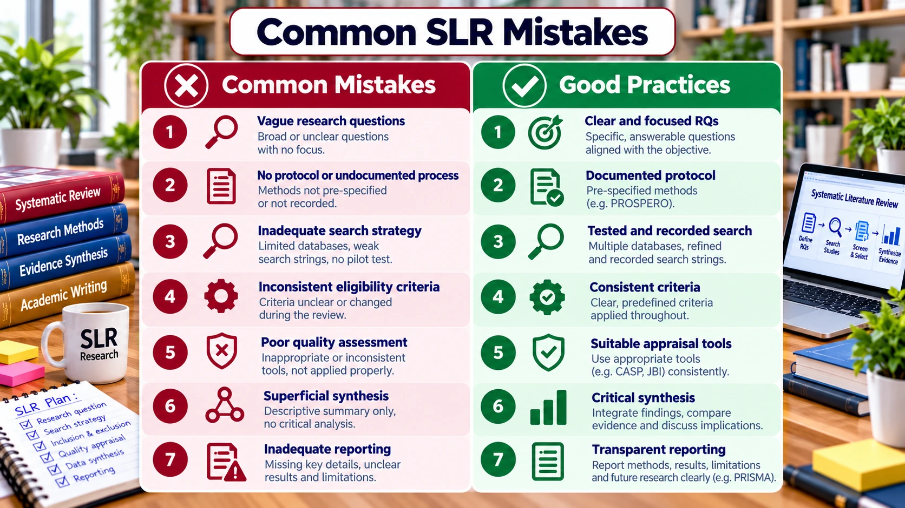

SLR FOUNDATIONS · PRE-HANDS-ON LEARNING
Common SLR Mistakes
Spot preventable errors before they weaken a review.

Common problems and practical corrections
| Problem | Why it matters | Correction |
|---|---|---|
| SLR presented as a narrative summary | Selection and synthesis cannot be evaluated. | Document a transparent and reproducible review method. |
| RQ too broad or not aligned | Search and synthesis become unfocused. | Map each RQ to concepts, eligibility and extraction fields. |
| Search strings not reported | Search cannot be reproduced. | Record database-specific strings, filters and search dates. |
| PRISMA diagram without a clear audit trail | Selection numbers may be inconsistent. | Maintain identification, deduplication and screening logs. |
| Counting studies instead of synthesising evidence | Review offers limited insight. | Compare methods, contexts, contradictions and evidence strength. |
| Unsupported novelty claims | Contribution is not established. | Compare recent related reviews explicitly. |
| Unverified AI-generated citations | May introduce fabricated sources. | Verify every citation, DOI and extracted finding. |
Pre-submission quick check
- Can another researcher repeat the searches?
- Are exclusion decisions and selection counts consistent?
- Does every major conclusion trace to included evidence?
- Are the review’s limitations and scope stated clearly?
- Does the manuscript follow the target journal’s instructions?